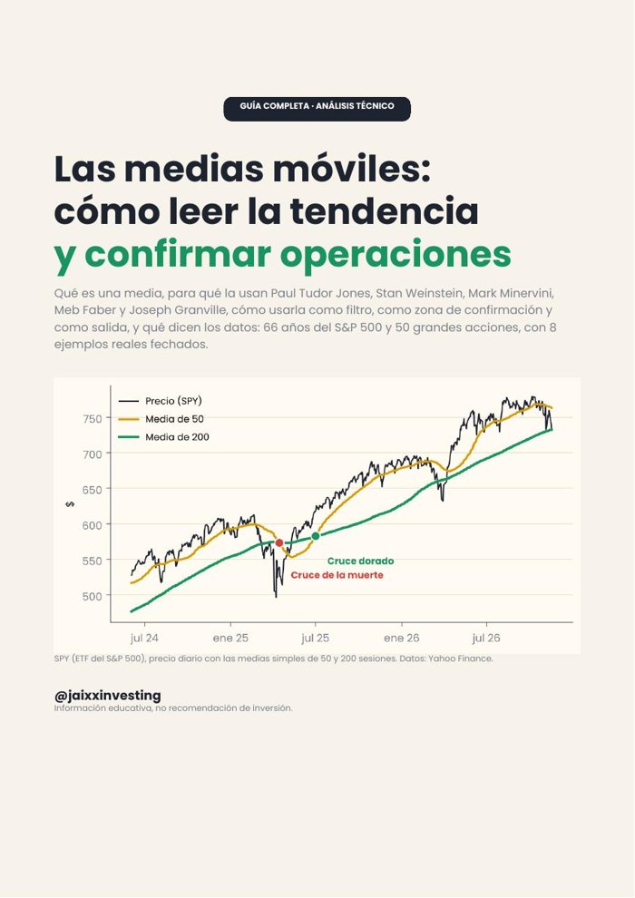
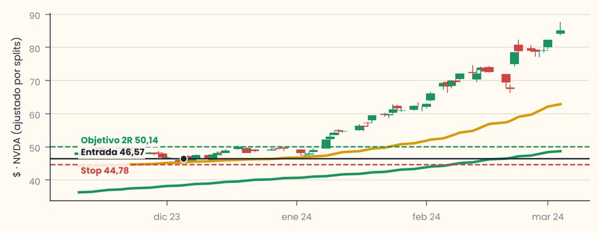
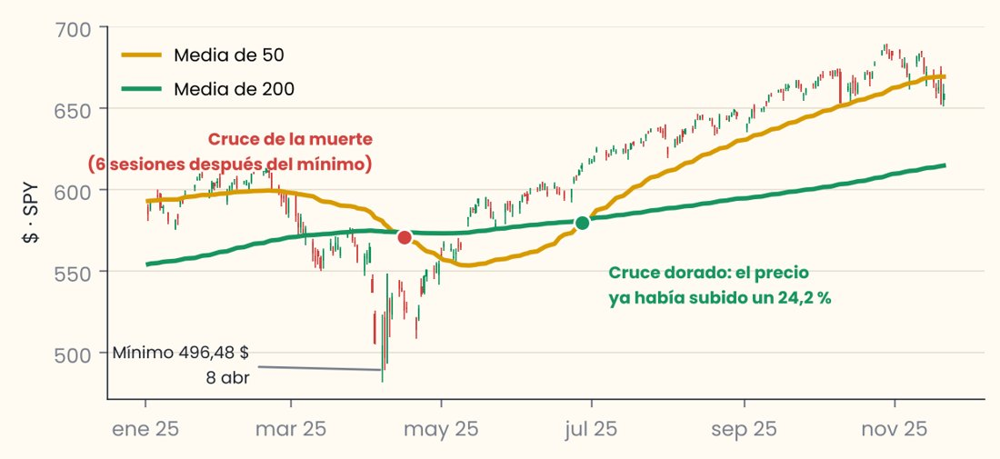

Guía gratuita · Análisis técnico
Las medias móviles: cómo leer la tendencia y confirmar operaciones
Qué es una media móvil, para qué la usan Paul Tudor Jones, Stan Weinstein, Mark Minervini, Meb Faber y Joseph Granville, y cómo usarla en sus tres papeles: filtro de tendencia, zona de confirmación y salida. Con lo que dicen 66 años de datos del S&P 500 y 8 ejemplos reales, incluidos los que fallaron.
Descargar la guía en PDF
Qué vas a encontrar
- Qué es una media móvil, la diferencia entre la simple y la exponencial y por qué siempre va por detrás del precio.
- Cómo se lee: la pendiente, la posición del precio y la distancia, y qué periodo usar en cada plazo.
- Quién la usa y para qué: la regla de la media de 200 de Tudor Jones, las cuatro etapas de Weinstein, el Trend Template de Minervini y la regla de los 10 meses de Faber.
- Las 8 reglas de Granville y cómo se opera el rebote en la media, con un ejemplo de cálculo del tamaño de la posición.
- Los cruces dorado y de la muerte, y por qué confirman pero no anticipan.
- Lo que dicen los datos: el S&P 500 desde 1960 y 50 grandes acciones durante 10 años.
- Una checklist de ocho puntos, 8 ejemplos reales con dos gráficos cada uno y los errores más frecuentes.
Así se ve un ejemplo por dentro

Nvidia (NVDA): rebote en una media de 50 que subía en diciembre de 2023; alcanzó el objetivo de 2 veces el riesgo en 9 sesiones.

SPY en 2025: el cruce dorado llegó con el precio ya un 24,2 % por encima del mínimo de abril.
Los 8 ejemplos
| Activo | Uso de la media | Resultado |
|---|---|---|
| S&P 500 | Salida con la media de 200 · oct 1987 | Fuera dos sesiones antes del lunes negro |
| ETF del S&P 500 | Salida con la media de 200 · 2007-2009 | Evitó un −53,8 % |
| ETF del S&P 500 | Salida con la media de 200 · 2020 | A medias: salió y volvió tarde |
| ETF del S&P 500 | Mercado lateral · 2015-2016 | Falla: 12 cambios, −4,1 % |
| ETF del S&P 500 | Cruces dorado y de la muerte · 2025 | Llegaron tarde |
| Nvidia | Rebote en la media de 50 · dic 2023 | Objetivo 2R en 9 sesiones |
| Nvidia | Rebote en la media de 50 · dic 2021 | Falla: stop en 3 semanas |
| Meta | Toque de una media que baja · ago 2022 | La trampa: −41,8 % en 60 sesiones |